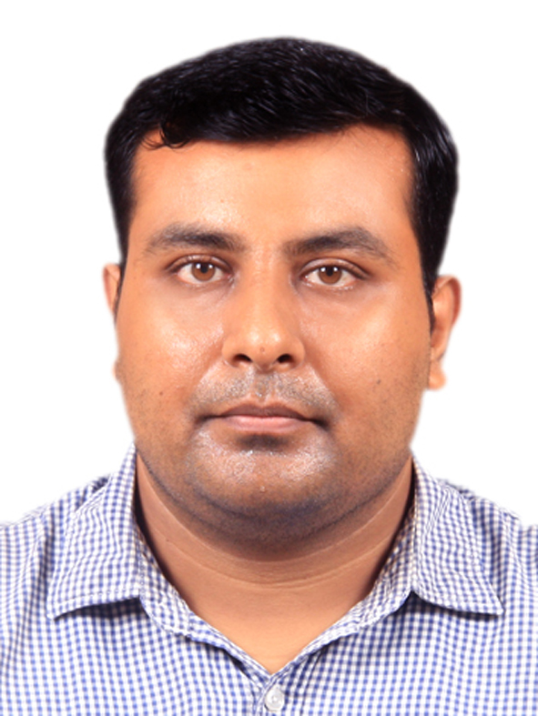

Abhishek Chakraborty
|  | Visiting Research Scientist Email: abhishek2003slg (Φ ieee Ω org / Φ gmail Ω com) [Φ: AT, Ω: DOT] |
Short Bio
Abhishek Chakraborty, a senior member of the IEEE, IEEE ComSoc, and the ACM, has been a Visiting Research Scientist at the Qualcomm Institute, UC San Diego, USA, since July 2024. Before that, he was a postdoctoral researcher at the Qualcomm Institute from July 2021 to June 2024. He was awarded a PhD from the Indian Institute of Space Science and Technology in Thiruvananthapuram, Kerala, India, in May 2018, where he was a Senior Project Fellow from August 2017 to August 2018 and a Visiting Research Collaborator from March 2021 to June 2021. Before that, he worked as an Institute Post Doctoral Fellow and a Senior Project Officer at the Indian Institute of Technology Madras, Chennai, India, from August 2018 to February 2021. His current research interests, which span a wide range of areas, include (in alphabetical order) algorithms for complex networks, communication networks, complex networks, designing and deploying wireless network infrastructure on the Citizens Broadband Radio Service spectrum, network science, next-generation wireless networks, softwarized 5G networks, and wireless mesh networks, to name a few.